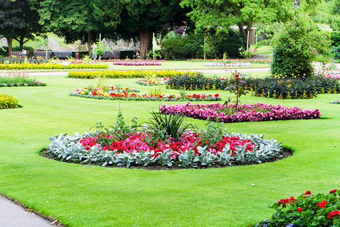
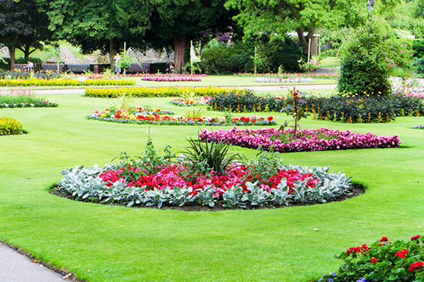

Hakgala Botanical Garden is the second largest garden among the five botanical gardens in Sri Lanka and is contiguous to Hakgala Strict Nature Reserve, which is the home to a variety of wild life, including bears, monkeys and birds. Situated some 10 kilometres South of Nuwara Eliya. The main sections of the garden are the rock garden, water garden, fern garden, Japanese garden and the seed room. Hakgala is a temperate hill-country garden, where the lovely low-country lotus and water lily mingles in their serene simplicity with sophisticated English roses, pre-historic looking ferns, and endemic orchids.
More DetailsPidurutalagala Mountain in Sri Lanka, which is also called Mount Pedro in in English is the tallest mountain on the island and situated in the Central Province, north – north east to the town of Nuwara Eliya.
More Details Direction
This lake is popular with domestic tourists who enjoy strolling the footpaths, taking out a swan-shaped pedal boat or trotting around on a pony. There are picnic tables, a small restaurant and a snack bar.
More Details Direction
The beautiful Bomburu Ella Falls is a collection of about 10 little-known jungle waterfalls, situated between 1500 and 2000m above sea level.They are served by the upper segment of the Uma River, known as the Duulgala River.
More Details DirectionKirigalpoththa is the 2nd highest Mountain of Sri Lanka after Pidurutalagal, With a peak elevation of 2,388 meters above sea level and the highest point in the Horton Plains National Park and also the highest peak accessible to the public.
More Details DirectionThe Victoria Dam is built at a deep valley just above the Victoria Falls rapids and 300 meters below the point where the Hulu Ganga meets the Mahaveli River. In addition victoria dam is the tallest dam of Sri Lanka.
More Details Direction
The Ambewela dairy brand was launched in 2004, with the vision of providing a premium quality dairy products to the Sri Lankan consumers and to contribute towards the development of the local dairy industry.Full Cream liquid milk was introduced first under the Ambewela brand.
More Details DirectionMoon Plains, also known as Sandathenna, is situated along Ranhawadigama Road in Nuwara Eliya. The vast slopes of the Moon Plains offer stunning panoramic views of the mountains and the surrounding area.
More Details DirectionVictoria Park, with its beautiful flowers and gardens is a must-visit when in Nuwara Eliya. Even if you aren't particularly interested in flowers, it's still a great place to go for a walk and relax.
More Details DirectionThe Kotmale Dam is a large hydro-electric and irrigation dam. Located at Kotmale, the dam is the second largest hydroelectric power station in Sri Lanka. Construction of the dam began in August 1979 and was completed in February 1985.
More Details DirectionThe Nuwara Eliya Golf Club, founded in 1889, is one of the oldest golf clubs in Asia and probably the world. It is an institution, rich in tradition, history and carries an ambience unparalleled in this country.
More Details DirectionLabookellie Estate Tea Factory, renowned for producing some of Ceylon’s finest Teas and the estate itself, established nearly 150 years ago, is perhaps the second oldest tea plantation in the Island.
More Details Direction
Horton Plains in Sri Lanka, is the coldest and windiest location in the country.Horton Plains was declared a National Park in 1988 and covers 3160 hectares of grasslands interspersed with forest and forms an undulating plateau more than 2000m high.
More Details Direction
 
